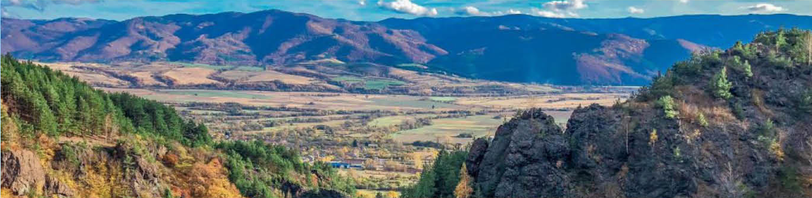
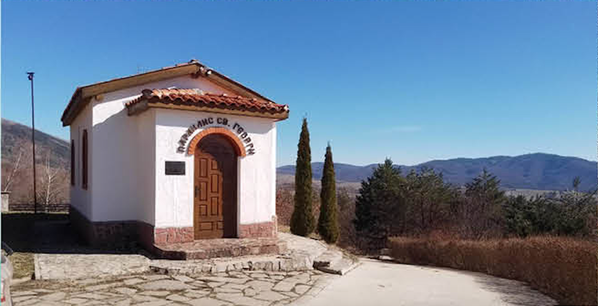
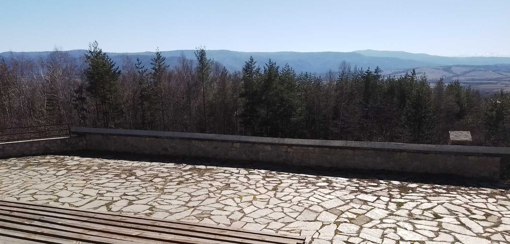
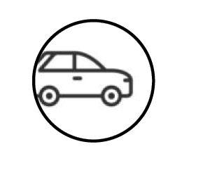
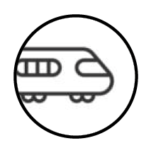
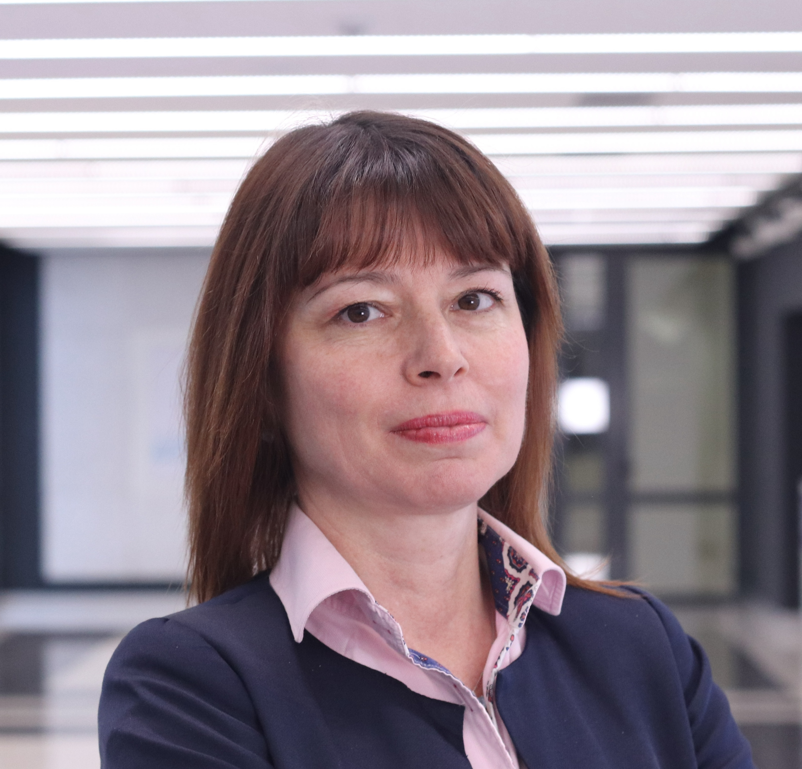
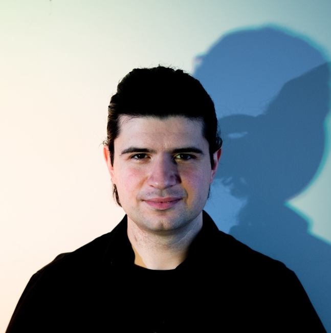
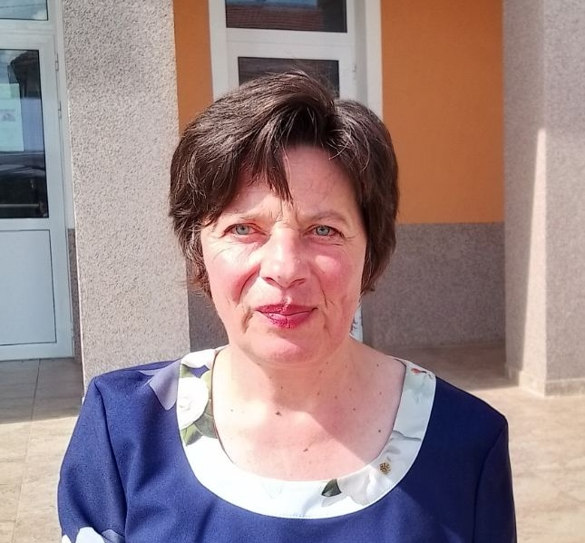
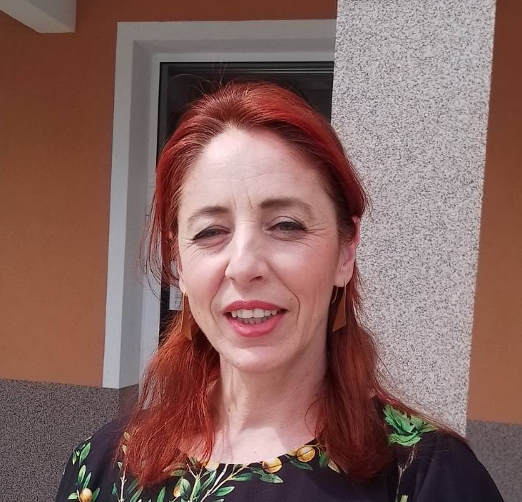
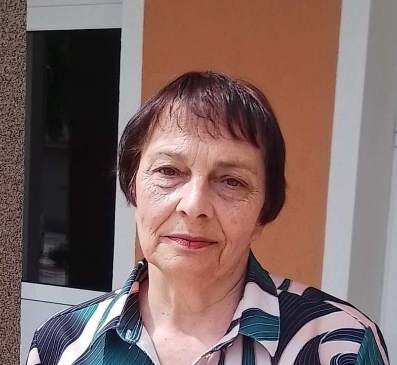

CONTEMPORARY MUSIC FESTIVAL

23 - 24.08.2025
Anton
ABOUT THE FESTIVAL
On the weekend of the last week of August of 2025, on August 23rd and August 24th, the third edition of the Festival of Contemporary Music will take place in the Bulgarian village of Anton situated between two mountain ranges: the Balkan range to the north, and Sredna Gora to the south. The Festival’s name, Misho’s Modified Mindscapes, has been dedicated to the memory of the late Bulgarian composer and pianist Mikhail Goleminov. In his lifetime, he saw the village of Anton, located not far from the Bulgarian capital city, and a place far from exploited by the influx of tourists, as a venue suitable for concerts held in close proximity with Nature. After his passing, Orange Factory decided to implement his idea by means of a series of concerts with 20th and 21st century music, with Mikhail Goleminov’s own compositions featuring prominently in the Festival’s programme. The majority of his works have had or will have their premiere here: in his day, Mikhail was more concerned with experimenting with every new idea or musical piece, rather than taking care of what he had already created. The same goes true for his earliest compositions inspired by Stockhausen, Schönberg, Berg, and Scriabine, all of which were written prior to 1984, i.e. before Mikhail moved to Vienna. And as luck would have it, in most cases the only copy of the composition remained in possession of the musician who performed it, and not of the composer.
During the third edition of the Festival, two such works considered by their author “forever lost” will have their premiere performance by Portuguese cellist Miguel Rocha: Sonata for solo cello (1984), and Sonatine for solo cello (1979). The scores were obtained courtesy of Bulgarian cellist Marieta Ivanova, who, at the time, had been entrusted with them for their performance by the composer himself. This rediscovery of sorts of a long forgotten piece of music is reminiscent of the fulfillment of Debussy’s dream as composer, who found rather tempting the idea that a non-suspecting audience would one day discover the existence of a certain composer and their body of work. Thus, the Quasar Saxophone Quartet who will fly to Bulgaria all the way from Montreal, Canada, solely for this concert in the village of Anton and will present works by Mikhail featuring fixed and live electronics, and live performers.
Bartok’s Sonatas for violin and piano, as well as the Sonata for violoncello and piano by Debussy, have been laid as the basis of the Festival’s general programme, whereas the concert under the motto “100 Avant-garde” featuring music by Boucourechliev, Boulez, Berio and Maderna will pay tribute to the brave musicians of the post-war avant-garde period in the history of music (approximately, between 1950 and 1975), who paved the way for this new idiom in European music. In 2025, when we celebrate the centennial of the so-called “New Music”, we are indeed reminded of the fact that it is not new at all, and how relative the terms avant-garde and post-avant-garde in fact are, especially considering the wide space these movements occupy in the general history of music.
Despite the “return to the roots” due to the fact that the majority of the works that will be performed at this year’s edition of the Festival were composed in the 20th century, the programme oscillates within the wide framework between works with an open form, and works with a somewhat classical connotation, pieces for an intstrumentalist and live generated electronics, as well as pieces with fixed electronics, classical chamber ensembles, etc.
Bartok’s two Sonatas for violin and piano are masterpieces created almost at the same time when Boulez, Boucourechliev, and Berio were born. These works are almost a hundred years’ old, and have an abstract, avant-garde, and mystical flavour, and certainly touch all listeners. It is highly unlikely that Bulgarian musicians have ever performed the two Bartok sonatas in one evening: but this is bound to happen at this year’s edition of the Festival. And by all means, the open air scenery will be the most suitable ‘stage’ for their performance.
The Quasar Saxophone Quartet from Canada will open the Festival with a concert that will feature alongside Mikhail Goleminov’s Saxophone Quartets, the Bulgarian premiere of Yassen Vodenitcharov’s Cinq pièces liquides, as well as compositions by the emblematic Canadian author Claude Vivier and the young Gordon Williamson. The musicians of Quasar will perform also a piece by Keisuke Yokota, one of the composers prized at the 2023 Composition Competition dedicated to Marin Goleminov and Mikhail Goleminov.
This year there will be two pieces by Steve Reich: yet again, like in 2023, the valley will resound with the echo of minimalistic music. These are New York Counterpoint, in the version for a saxophone quartet, and Piano Phase, which Hristea Markova and Nikolay Ivanov will perform on piano and marimba. Hristea won an award to the name of Andre Boucourechliev at the Competition for Contemporary Piano Music in Orleans in 2022 with a performance of his Archipel 4. Nikolay Ivanov will present works by contemporary composers and performers of marimba and maracas.
Miguel Rocha has also included in his programme two pieces by the leading Portuguese composer Jorge Peixinho, who has a huge influence and occupies a central place in contemporary Portuguese music, as well as “Fragmentos” by Peixinho’s student Isabel Soveral, with her extremely intensive sombre expression achievng a perfect combination between the cello and piano sound.
Irish composer Fergus Johnston, a true friend of Orange Factory, will be presented this year with his Piano trio.
LOCATION



ACCOMODATION

You can reach the village of Anton by car or coach on the I-6 Route. It is located some 88 km from Sofia, and 5 km from the town of Pirdop. The open-air summer stage in front of St. George’s Chapel is located 500 m to the left of the entrance to the village.

On August 23rd an 24th, trains from Sofia to Anton and from Anton to Sofia will run in accordance with the Summer-Time Schedule of the Bulgarian State Railways.
The accommodation venues are located both in the village of Anton and in the town of Pirdop, as follows:
TRANSPORTATION
For those who wish to visit the Festival, a bus shuttle service has been arranged, as follows
SATURDAY, 23 AUGUST 2025
Departure
3 p.m. Sofia - City Theatre “Behind the Chanel” Boul. “Madrid” 1
Return
11 p.m. village Anton - St. George’s Chapel
SUNDAY, 24 AUGUST 2025
Departure
2 p.m. Sofia - City Theatre “Behind the Chanel” Boul. “Madrid” 1
Return
11 p.m. village Anton - St. George’s Chapel
PROGRAM
SATURDAY
AUGUST 23rd 2025
CLAUDE VIVIER
MIKHAIL GOLEMINOV
GORDON WILLIAMSON
YASSEN VODENITHAROV
KEISUKE YOKOTA
STEVE REICH
“QUASAR” saxophone quartet
Montreal, Canada
TWO SONATA'S FROM BELA BARTOK
KRASSIMIRA SULTANOVA - violin
ANGELA TOSHEVA - piano
SUNDAY
August 24th 2025
OLIVIER MESSIAEN
ANDRE BOUCOURECHLIEV
STEVE REICH
LEIGH HOWARD STEVENS
PETER KLATZOW
JAVIER ALVAREZ
Hristeya Markova - piano
Nikolay Ivanov - marimba and maracas
CLAUDE DEBUSSY
JORGE PEIXINHO
ISABEL SOVERAL
MIKHAIL GOLEMINOV
Miguel Rocha - violoncello, Portugal
Angela Tosheva - piano
"100 YEARS AVANT-GARDE"
ANDRE BOUCOURECHLIEV
PIERRE BOULEZ
LUCIANO BERIO
BRUNO MADERNA
FERGUS JOHNSTON
Angelina Getcheva - clarinet
Ioan Kiossev - oboe d'amore
Elena Ganova - violin
Stefan Hadjiev - violoncello
Martin Pavlov - Flute
Ivan Kerekovsky - piano
TEAM

Iva Gepsimova
general manager
+359 88 771 9099

Ivan Kerekovsky
artistic manager
kerekovsky@pm.me

Donka Niikolova
regional manager
+359 87 839 6576
.jpg)
Angela Tosheva
artistic director
angela@angelatosheva.com

Tsvetanka Madjarova
local coordinator
+359 87 624 5734

Nonka Ivanova
technical assistant
+359 88 532 6681